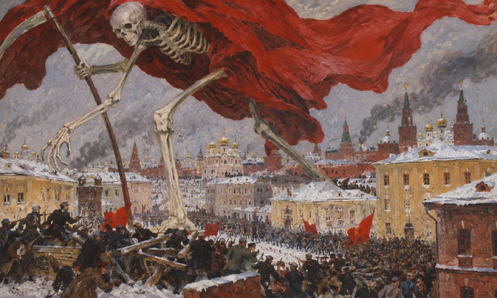

Güncel Rus Edebiyatının Ekim Nöbeti II
Genelkurmay’ın kızıl avangardı Bugün Moskova’daki muhafazakâr çevrelerin ve kilise hiyerarşisinin dillerine pelesenk ettiği “Ekim Devrimi ihanetti, Çarlık Rusyası refah cennetiydi” nakaratı darmadağın olmaya mahkumdur.…
 Emre Köse
Emre Köse14 Kasım 2026 · 5 dk okuma

Genelkurmay’ın kızıl avangardı
Bugün Moskova’daki muhafazakâr çevrelerin ve kilise hiyerarşisinin dillerine pelesenk ettiği “Ekim Devrimi ihanetti, Çarlık Rusyası refah cennetiydi” nakaratı darmadağın olmaya mahkumdur. Peder Tihon Şevkunov gibilerin Çarlık ekonomisine dair çizdiği pembe tabloların aksine, 1910 yılında Rusya’nın kişi başına düşen millî geliri yalnızca 43 dolardı; bu rakam ABD’de 351, İngiltere’de 237, Almanya’da 154 dolara ulaşıyordu. Çeliğin ve kömürün belirlediği sanayi çağında Rusya, dünya üretiminin sadece %5,3’ünü temsil eden devasa bir köylü okyanusuydu. Dahası, 1887 tarihli ünlü “aşçı çocukları genelgesi” ile alt sınıfların liselere girişi resmen yasaklanmış, 1897 nüfus sayımında halkın ancak %21’inin okuma yazma bildiği tescillenmişti.
Askerî tarihçi ve stratejist Sergey Pereslegin, Drujba Narodov’daki tahlilinde 1917’yi irdelerken son derece kritik bir yapısal gerçeğin altını çiziyor: Bolşeviklerin iktidarı alması ve koruması, salt 30 bin kişilik bir yeraltı partisinin darbesiyle açıklanamaz. 1917, Çarlık Genelkurmayı’nın teknokratik kanadı ile Bolşevik kadrolar arasındaki zımnî bir ittifakın ve mutabakatın ürünüydü.
1905 Japon yenilgisinin ardından Rus Genelkurmayı, ülkenin modern bir savaşı taşıyabilecek teknolojik, altyapısal ve eğitsel kapasiteden yoksun olduğunu kavramıştı. General Mihail Bonç-Bruyeviç -ki kardeşi Vladimir Bonç-Bruyeviç, Lenin’in Sovnarkom’daki sağ koluydu- ve Genelkurmay İkinci Başkanı General Nikolay Potapov gibi figürler, Çarlık rejiminin köhnemiş yapısıyla bir sanayi devriminin gerçekleştirilemeyeceğini görmüşlerdi.
Rus ordusunun en parlak kurmay subaylarının ve Vladimir Vernadskiy öncülüğündeki Rusya’nın Doğal Üretici Güçleri Komisyonu’nun (KEPS) devrimin hemen ardından Sovyet iktidarının emrine girmesi tesadüf değildir. Kızıl Ordu’daki eski kurmay subayların sayısı, Beyaz orduların tamamındakinden fazlaydı. Gelgelelim, bugünün Beyaz Ordu nostaljisiyle beslenen popüler anlatılarının aksine, Beyaz hareket mutlak bir siyasal iflası temsil ediyordu. Beyazların elinde ne bir toprak reformu tasarısı ne de bir sanayileşme vizyonu vardı.
İç Savaş, iki denk ordunun çatışması değildi; düşünsel karmaşıklığı yüksek olan bir geleceğin, fikrî cephanesi tükenmiş bir geçmişi süpürmesiydi. Pereslegin’in “ziroteizm” (sıfır-tanrıcılık) olarak adlandırdığı olgu tam da burada devreye girer. Ortodoks Hristiyanlığın mesihçi köklerinden beslenen ama Yaradan’ı devreden çıkarıp O’nun tüm yaratıcı ve dönüştürücü sorumluluğunu insanın sırtına yükleyen bir dünya görüşüydü bu. Tanrı’sız ama mutlak bir adanmışlıkla yürütülen bu seküler kurtuluş projesi, Martin Heidegger’in 1945’te yenilgiye uğrayan Üçüncü Reich’ın ardından teslim ettiği o hakikati doğurmuştu: Ruslar kendilerini davalarına feda edebilme kudretine sahiptiler; zira inşa ettikleri şey basit bir iktidar değil, yeryüzü cennetiydi.
Ölümü ilga etme arzusu
İşte bu yeryüzü cenneti arayışı, erken Sovyet edebiyatında ölümün biyolojik olarak alt edilmesi fikriyle iç içe geçmişti. Edebiyat kuramcısı Irene Masing-Delic’in Ölümün İlga Edilmesi çalışmasında dikkat çektiği üzere, 1920’lerin Sovyet edebiyatı tam anlamıyla bir “Kızıl Gotik” estetiği üretti. Nikolay Fyodorov’un ölülerin fiziksel dirilişi doktrininden ve Aleksandr Bogdanov’un kan nakli yoluyla yaşlanmayı durdurma deneylerinden beslenen bu hat, Nikolay Ognev gibi yazarların metinlerinde berraklaşır.
Ognev’in 1922 tarihli Avrasya novellası, dönemin zihniyet dünyasını anlamak için eşsiz bir örnektir. Romanın kahramanı Teğmen Razderişin, Çarlık ordusunun yıkıntıları arasından sıyrılıp uyuşturucu dumanları içinde Asya ile Avrupa’yı birleştiren arkaik bir imparatorluk hülyası kurar. Fakat Rusya’ya döndüğünde sığınabildiği tek yer, mülkünü kaybedince geçim derdiyle papazlığa soyunmuş eski toprak sahibi Bubnov’un kontrolündeki aristokrat aile mezarlığıdır. Razderişin bu kasvetli aile mahzeninde votka içip kabuslar görürken mezarlığın hemen yanı başında bir grup işçi, devrimci bir cumartesi imecesinde Birinci Dünya Savaşı’ndan kalma arızalı bir tankın motorunu sabaha kadar kan ter içinde tamir ederler. Şafak söktüğünde, motoru homurdayarak çalışan tank mezarlığın önünden geçer. Eski Rusya mezarlıkta çürüyen, mezar soyguncusu asalak rahiplerin elinde can çekişen bir cesettir; yeni Rusya ise makinelerin ritmiyle ölümü ve çürümeyi yenen, doğayı akılla zapt eden proleter iradedir. Ognev’in Antenin Çöküşü öyküsünde de Eski Rusya, kar yığınlarının ve mezarların altından fırlayan hortlak bir köylü kocakarı kılığında tecessüm eder; sosyalizmin görevi ise bu hortlağın göğsüne modern tekniğin ve rasyonel aklın kazığını çakmaktır.
Bugünün Rus yazarlarından yalnızca birkaçı bu ontolojik gerilimin kıyısına yaklaşabilmiştir. Zahar Prilepin, Manastır (Obitel) romanında Solovki Özel Yetki Kampı’nı (SLON) sadece bir baskı aygıtı olarak değil, Fyodor Heydrichvari kamp şefi Eyhmanis’in şahsında insan doğasını zorla ve şiddetle yeniden yoğurmaya çalışan bir “toplumsal laboratuvar” olarak resmeder. Eyhmanis insafsızdır, ama cinaî bir şevkle insanı dönüştürebileceğine inanır.
Leonid Yuzefoviç’in Kış Yolu (Zimnyaya doroga) belgesel-romanı ise bu trajediyi çok daha yalın ve sarsıcı bir nesnellikle ele alır. 1923 yılında Yakutistan’ın tundralarında, eksi elli derecede karşı karşıya gelen Beyaz General Pepelyayev ile Kızıl komutan, anarko-komünist Strod’un hikâyesi bir kahramanlık menkıbesi değildir. Sasıl-Sarsı Muhasarası sırasında Strod’un müfrezesi, etraflarını saran kurşunlara karşı donmuş at gübresinden ve atlarla insanların kaskatı kesilmiş cesetlerinden duvarlar örerek direnir. Cesetlere çarpan kurşunların çıkardığı o mekanik ses, insan etinin taşlaştığı o an, devrimin bedelinin dehşetli bir görselidir.
Geleceksiz bir imparatorluğun kâbusu
Fakat… Bu tekil ve istisnaî edebi başarılar Rus kültürünün genelindeki kısırlığı perdelemeye yetmiyor. Sovyetler Birliği’nin tasfiyesinden otuz yılı aşkın bir süre sonra bugünkü Rus devleti, askerî ve jeopolitik kaslarını ne kadar gererse gersin ideolojik düzlemde geleceksiz bir gövdeye hapsolmuş durumda. Çarlık nostaljisine yaslanan manastır ve Bizans muhafazakârlığı ve Büyük Anayurt Savaşı’nın zafer kültüyle cilalanmış bir neo-Sovyet vatanseverlik kiti var önümüzde. Her iki anlatı da yüzünü geriye dönmüştür; her ikisi de mevcudu muhafaza etmekten başka bir ufuk vadedemez.
Çağdaş Rus edebiyatının Ekim 1917 karşısındaki bocalaması, işte bu yapısal geleceksizlik sendromunun dolaysız bir yansımasıdır. Devrim, bugünün Rus burjuvazisi ve onun hizaya sokulmuş aydınları için hâlâ kovulması gereken bir heyuladır. Bugünün liberal veya muhafazakâr Rus yazarı ise geçmişe baktığında yalnızca bir sürü, sarhoş bir lümpen güruhu ve onları güden eli kanlı komiserler görmeyi tercih ediyor. Bu, tarihsel gerçekliğin kavranması değil; bugünün konformizmini aklamak için geçmişin mezarlığına çekilen keyfi bir ahlak setidir.
Yüz yıl önce köylü Rusyası’nın çamurundan elektrik santrallerini, uzay misyonlarını ve devrimci bir avangardı çıkaran o tarihsel enerji, bugün edebî metinlerin sayfalarında birer hortlak masalı gibi dolanıp duruyor. Geleceği tasavvur etme kudretini yitirmiş bir toplumun edebiyatı, kendi geçmişini ancak mezarlık bekçisi papaz Bubnov’un gözleriyle seyredebilir. O mezarlığın yanı başından motorunu gürleterek geçen tankın sesini ise, ufukta yeni bir fırtına kopana dek hiç kimse duymak istemeyecektir.
Dış haberler editörü olan Emre Köse, 2016'dan bu yana ana akım ve alternatif çeşitli basın kuruluşlarında çalışmıştır.
Yazarın tüm yazıları →